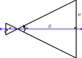

This page describes cameras and their use in Project: 3D
Craft. This section is broken into three parts, a discussion of
cameras, a discussion of the p3dc_CMRA
type, and then the APIs that take cameras as their first
parameter (the Camera API).
The p3dc_CMRA type is used to define all of the properties of a virtual camera.
| Member | Type | Description |
|---|---|---|
| origin | p3dc_PNT3 | This is the location of the camera in the world. The vector from it to the look-at point defined below is the view's Z axis. |
| look | p3dc_PNT3 | This is the point in the world where the camera is supposed to point. By default it is 0,0,0 |
| up | p3dc_PNT3 | This is a unit vector that defines "up" for the camera. It is an error to have the look-at vector and the up vector match. |
| twist | p3dc_FLOAT | This is defined is a rotation about the camera's Z axis. It is currently defined as being defined to occur before camera re-location. |
| far_p | p3dc_FLOAT | This value defines the "back" of the viewing frustum. Anything beyond this point is clipped out of existence. |
| near_p | p3dc_FLOAT | This is the distance from the camera origin to the 'near' plane. If the near plane is the screen this would be 0. |
| fov | p3dc_FLOAT | This is the field of view for the camera. It must be greater than 0 and less than 180 degrees. Attempting to set it to values outside this range is undefined. |
| W2V | p3dc_XFRM | This transform will transform a point from world co-ordinates into this camera's viewing co-ordinates. It is affine and does no perspective projection. I use it for models that are moving about in the world. |
| V2S | p3dc_XFRM | This is the "view-to-screen" transform and contains the perspective projection of the transformed world view on to the 2D screen view. |
| view_xfrm | p3dc_XFRM | This transform is the product of W2V*V2S and will transform a point from the world, into the view space of the camera, apply a perspective projection and make the point ready for clipping. It is used extensively when drawing the scene on the screen. |
| vp | p3dc_VIEW | This field is a view port that is used by the GAL layer to convert from camera co-ordinates into screen co-ordinates. (see below) |
The p3dc_VIEW type is used to define the mapping between a camera and the screen. The camera realizes the scene in ideal (i.e. -1.0, 1.0) co-ordinates and the view is used to map those into screen co-ordinates.
| Member | Type | Description |
|---|---|---|
| scale_x | p3dc_FLOAT | Scaling factor to convert from -1.0 to 1.0 into screen co-ordinates. |
| scale_y | p3dc_FLOAT | Scaling factor for the vertical screen access to convert from -1.0 to 1.0 in Y space. |
| center_x | p3dc_FLOAT | This represents the screen X co-ordinate of point "0,0". |
| center_y | p3dc_FLOAT | This represents the screen Y co-ordinate for point "0,0". |
In the "real" world, cameras focus light through lenses on to either a piece of film or a light sensitive detector of some kind (say a CCD). The result is that a 3-dimensional scene is rendered on to the plane of the detector/film/whatever. What certainly wasn't so clear to me was how to simulate that in a computer program.
The p3dc_CMRA
data structure is one of the more important ones in the library.
This structure defines a "view" into the 3-D world that
projects on to a rectangular 2-D plane (the screen). The camera
structure has three main parts:
These components form the basis of a simple viewing system and the camera API is all about manipulating these transforms to simulate putting the camera at a particular point in space and pointing it at something.
This viewing system is incomplete in that it is not as general as the PHIGS system or others where the perspective reference point (PRP) can be specified, instead, the PRP is always centered in the view.
The camera system does however let you set a variety of parameters to suit your needs. In particular it allows you to set the "near" and "far" clipping planes, the "twist" of the camera, its "up" vector, where it is "looking", and its is "location." Each of these parameters are represented in the structure by the fields, near_p, far_p, twist, up, look, and origin. The parameters are combined to create the transforms necessary to render a particular view. The result of all the camera calculations is a matrix, view_xfrm, that is used to render the scene.
Once the camera is set up, you call the rendering API to draw the scene with that camera's transforms and then display the resulting frame.
Step one in initializing a camera is figuring out how to transform world co-ordinates such that the camera's origin is at 0,0,0 and the Z axis points straight away from the camera (into the screen). This computation is done using the function p3dc_camera_xfrm. This function does its work by working backward from what you want, let me explain.
The p3dc_CMRA
structure contains the origin of the camera O
(I'm using upper case letters to indicate vectors. Vectors have
three scalar components x, y, z) and the point in space where the
camera is looking L.
Using these to co-ordinates in world space we can
compute the unit vector that points from O
to L by performing
the vector subtraction of L
and O and
normalizing the result like so:
F = | L - O |
The result, F,
is the z axis of the new view. (This vector is called F to distinguish it from
the world's z axis, the view's three basis vectors are Right, Up, and Forward which related to x,
y, and z in a standard
Cartesian system.) To compute R,
the view's x axis, we compute the cross product of the up
vector stored in the p3dc_CMRA
and the just computed F
vector and normalize it to be a unit vector. This can be written
as:
R = | up x F |
At this point we have two of the final basis vectors (F and R). With these two vectors we can compute the up vector, U, by computing the cross product of F and R and normalizing the result like so:
U = | R x F |
After figuring out the desired U vector we have the basis vectors for the view transform. (R, U, and F.)
Now the twist of the camera has to be factored into the matrix. The twist of the camera is the rotation of the camera about its own Z axis. This computation is done by multiplying this view transform with another transform that rotates about the F axis. This results in a new set of basis vectors for the view which I call R', U' and F'. Note that there is one bit of cleverness going on here that isn't immediately obvious. The camera transform is an inverse transform which means it spins the world about as opposed to camera spinning about. Since the matrix that is computed is both affine and orthonormal the inverse of the matrix can be computed by swapping the rows and columns. Thus where I would put each vector into a column in a 'regular' matrix I put the camera's view vectors into the resulting matrix in rows.
The final step is to place the camera origin in this new space. That could be represented as:
| R'x R'y R'z |
P = | U'x U'y U'z | | Ox Oy Oz |
| F'x F'y F'z |
The transformed origin, referred to above as P, is placed with the view basis vectors into the 4 x 4 transformation matrix to complete the world to view transformation as follows:
| R'x R'y R'z Px |
| U'x U'y U'z Py |
| F'x F'y F'z Pz |
| 0 0 0 1 |
The result of these computations is stored in the camera's W2V transform. The W2V transformed is used by the model code as well as part of the computation of the models eventual model space to screen space transformation.
Now for something a bit different. Going from the view on to the screen.
Going from view to screen is easy when you understand it, and impossibly opaque when you don't. This is where you need to know a bit about matrix math to understand exactly how the Perspective Transformation actually works.
To start, lets explain how perspective works. When you look at something light from all directions in front of you is converging on your eyeball and then getting fed to your optic nerve. This can be modeled as a "pin hole" camera. (Using a pin-hole camera is preferable since there are no focal length and focal depth issues associated with them). Things that are closer obscure more of your vision than things that are farther away. Thus the things farther away look smaller although your brain auto-compensates and tells you they aren't really small at all.
The typical "newbie" way of achieving a perspective view then is to divide the X and Y view co-ordinates by Z before drawing them on the screen. The newbie technique works well and is satisfactory for many game situations or times when control of the view isn't critical.
I of course wanted to know exactly what it meant to divide by Z and that lead me to reading several discussions on the perspective transformation.
The bottom line is that you can think of a pin hole camera as defining two right triangles, as shown in the image to the right (click on it for a larger view). The value H is reflected through the pin-hole to the value h behind it. Scaling of H to h is defined by the ratio of H to D which, from basic geometry of similar triangles, is identical to the ratio of h to d. Further, the ratio is related to the angle a which is called the "field of view."
So if you fix the field of view to be 90º then the angle in the right triangle becomes 45º and the ratio between D and H is 1.0. Thus simply dividing your X and Y coordinate by Z is a simple way of implementing a perspective transformation with a fixed field of view of 90º.
But what about other fields of view and why are they important? Looking at the figure above you can probably see that if the field of view is narrower then the distance at H will be shorter. However, the screen remains the same size, so displaying less of the view on the same size screen causes the perception that the view is enlarged or zoomed.
Looking at documentation on 35MM camera lenses it became clear that what defined a "tele-photo" lens is the distance of its focal length. The focal length of the lens is just d in the figure, and since h is fixed, changing the focal length changes the field of view. Longer focal length, smaller field of view, and larger zoom factor.
So to manage zooming in our simulated camera we need to do something to the X and Y co-ordinates and that something is we need to scale them. How much? By the same ratio d/h that we used when figuring out the relationship of H to h. To do this with a matrix is easy, we put the value d/h into the [0,0] and [1,1] locations and that does the scaling for us. But we aren't quite done. We are transforming from the view to the screen and it will be rare that everything in the screen will fit, so we will have to clip the scene to the screen boundaries.
A lot of people get confused by clipping. I know I did, and still do now and then, but I think I've got it nailed now. I implement clipping using the Sutherland-Hodgman clipping algorithm. Which is a very simple algorithm for walking the vertices of a polygon, and inserting new vertices whenever the current vertex and the next vertex are on different sides of the clipping view. But what is the clipping view?
Imagine for a moment that you want to clip in 3-D and to simplify things you make some assumptions which are:
This is a pretty easy space to clip to right? Just check to see if -1.0 < x < 1.0, and -1.0 < y < 1.0, and finally 0.0 < z < 1.0. If a vertex is beyond one of those boundaries then you need to clip it because the "view" is only what is inside the box.
As it turns out this is exactly what Sutherland-Hodgman does and it does it by considering each polygon in the scene. The algorithm starts with the second vertex (remember the minimum polygon is a triangle which has three vertices!) and compares it with the previous vertex. If both are outside the box, nothing happens, if one is inside and one is outside the box then a new vertex is created and "output" where the line segment transitions to being "inside" the box, and if both are inside then the current vertex is output and the next step is done. When the last vertex is reached the algorithm "rolls over" to the first vertex (remember it skipped it at the start) and compares the first vertex to the last vertex outputting it as appropriate. If the list of "outputted" vertices is zero then the polygon is outside the box completely, otherwise the new list is the clipped version of the polygon.
Note that the algorithm operates on each plane intersection test (x < -1.0 for example) iteratively. The result of running this algorithm for all of the plane intersection tests (x > -1.0, x < 1.0, y > -1.0, ... ) is a polygon that is completely inside the box.
Yes, this takes up some computer time to do, however most polygons do not need to be clipped and this step can be skipped on those polygons that are completely visible. A very fast visibility test is done with outcodes and is described in the source.
"But how do we get to this 'ideal' world?" With a transformation of course! Remember that that by scaling the x and y values by the ratio of the field of view triangle we converted from an arbitrary field of view to a 90 field of view? Well in that view we can make a box by dividing x and y by z! So now Xs = x / z and when z = x, Xs will be 1.0 ! But that is a lot of divisions that we would just as soon avoid so instead of comparing x to 1.0 we can simply compare x to z!
So I make two changes to the V2S matrix, in addition to the x and y scaling I add to [3,2] the value 1.0, to [3,3] the value 0.0, and to [2,2] and [2,3] the values 1 / (far_p - near_p) and -near_p / (far_p - near_p) respectively. This makes the matrix look like this:
| d/h 0.0 0.0 0.0 | | 0.0 d/h 0.0 0.0 | | 1.0 - near_p | | 0.0 0.0 ---------------- ----------------- | | (far_p - near_p) (far_p - near_p) | | 0.0 0.0 1.0 0.0 |
And when I multiply by this matrix there are a couple of interesting effects. The fourth element 'w' in the resulting vector R becomes Rw = Vx * 0.0 + Vy * 0.0 + Vz * 1.0 + Vw * 0.0, or more simply the value of Vz gets copied into Rw. And the value in Rz gets computed as Rz = Vx * 0.0 + Vy * 0.0 + Vz /(far_p-near_p) + (Vw * near_p) / (far_p - near_p) and since Vw is always 1.0 that reduces (with a bit of algebra) to Rz = (Vz - near_p)/(far_p - near_p). Which, if you were to map it out, re-maps Rz to be a number that moves linearly between 0 when Vz = near_p and 1.0 when Vz = far_p. This linearity is used to our advantage to get the maximum resolution out of the 16 bit w-buffer available on the Voodoo style hardware accelerator.
Finally, the view port may not be square, and as such the ratio of the width to the height is not 1.0. To correct for a non-square view port, the term in location [0,0] is multiplied by the ratio of the width to the height to "squeeze" the box along its width when doing clipping calculations.
After computing the world to view, and view to screen
transformations, the results are multiplied to create the final
composite transformation and stored in the structure member view_xfrm.
Additionally the structure VP which is of type p3dc_VIEW
contains the scaling factor for the screen x and screen y
co-ordinates. The rendering pipeline then works as follows:
1. Note that the depth computation is pretty specific to the 3Dfx hardware. The "one over w" or oow value ranges from 1/1.0 to 1/65536 using this technique.
Once the hardware layer has the screen co-ordinates and the depth it has all the information necessary to render the primitive into the frame buffer. When the frame buffer is made visible to the user, the user sees the 3-D world rendered from the viewpoint of the "camera" in world space. Voila' we're done!
These are the interfaces that are used to allocate, free, and manipulate cameras.
p3dc_CMRA *p3dc_new_camera( p3dc_FLOAT fov, p3dc_FLOAT x, y, z )
This function allocates a new camera from the heap and initializes the camera's transforms based on the field of view passed in as fov and the position in x, y, and z. The look-at point is assumed to be (0, 0, 0) and the up direction of the camera is assumed to be the same as the world's Y axis.
void p3dc_init_camera(p3dc_CMRA *cam, p3dc_FLOAT fov, p3dc_FLOAT x, y, z )
This interface initializes (or re-initializes) a p3dc_CMRA structure. The camera's look-at point is presumed to be (0, 0, 0) and the up vector is presumed to be the world's positive Y axis.
The parameters that control the field of view, clipping boundaries, etc, can be set individually or by using the very flexible p3dc_set_camera interface. Each of these interfaces is defined as p3dc_set_camera_XXX where XXX is the parameter of interest.
A couple of notes you should be aware of:
int p3dc_set_camera( p3dc_CMRA *camera, int parameter, ... , 0 )
This is the generic version of the camera parameter setting code. There are several parameters that can be set, they are identified by a constant and take at least one parameter. Parameters are passed to the function call as parameter/argument tuples. In all cases the argument is currently a pointer but this may change with future parameters. The constants and their parameters are:
Parameter Argument Description P3DC_CAMERA_ORIGIN p3dc_PNT3 *origin The x, y, and z components of origin are used to define the new location of the camera in world space. P3DC_CAMERA_VIEW p3dc_XFRM *transform The contents of transform are copied into the camera's W2V transform and the view transform is recomputed. P3DC_CAMERA_SCREEN p3dc_XFRM *transform The contents transform are copied into the camera's V2S transform and the view transform is recomputed. P3DC_CAMERA_ROLL p3dc_FLOAT *angle A rotation of angle degrees is applied to the camera's world to view transform about the local Z axis. Note: roll is relative to the current position, not the "up" vector. P3DC_CAMERA_YAW p3dc_FLOAT *angle A rotation of angle degrees is applied to the camera's world to view transform about the local Y axis. Note: yaw angle is relative to the current position. P3DC_CAMERA_PITCH p3dc_FLOAT *angle A rotation of angle degrees is applied to the camera's world to view transform about the local X axis. Note: pitch angle is relative to the current position. P3DC_CAMERA_FOV p3dc_FLOAT *angle The camera's field of view is set to angle degrees. This will force the V2S transform to be recomputed from the camera's parameters. P3DC_CAMERA_UP p3dc_PNT3 *up The camera's notion of "up" is set to be equal to the up parameter. Cameras are initialized with an up parameter of (0, 1, 0) (the world Y axis). P3DC_CAMERA_FAR p3dc_FLOAT *dist The camera's far clipping plane is set to dist. Objects that are farther away than this distance will not be rendered on the screen. Camera's initially have a far clipping plane set to 2048.0 P3DC_CAMERA_NEAR p3dc_FLOAT *dist The camera's near clipping plane is set to dist. Objects that are closer than this are clipped. This value must be greater than or equal to 1.0. P3DC_CAMERA_TWIST p3dc_FLOAT *angle The cameras twist is set to angle. Unlike roll above this is specified in degrees from the camera's local Up vector. P3DC_CAMERA_LOOK p3dc_PNT3 *target The camera is oriented to look at target in world co-ordinates. P3DC_CAMERA_DIR p3dc_PNT3 *normal The cameral is aligned the normal vector normal in world space. Once all parameters and their arguments are included, you must include a 0 to indicate the end of the list. This is a source of bugs, sorry about that. As a usage example, consider locating a camera at 10, 5, -5 and pointing it at the point 5, 5, 5:
p3dc_CMRA *cam = p3dc_new_camera(...); p3dc_PNT3 location, interest; location.x = 10; location.y = 5; location.z = -5; interest.x = 5; interest.y = 5; interest.z = 5; p3dc_set_camera(cam, P3DC_CAMERA_ORIGIN, &location, P3DC_CAMERA_LOOK, &interest, 0); ...In the above example the camera is located and pointed in the same call to p3dc_set_camera.
While the above routine is technically all you need, sometimes it is convenient to set the camera's parameters individually, this also allows for some nicer syntax. These routines should all call p3dc_set_camera or just be #defines to calls to p3dc_set_camera however given the evolutionary nature of the code not all of them are yet.
void p3dc_set_camera_fov( p3dc_CMRA *cam, p3dc_FLOAT fov )
This function sets the field of view of the camera to be fov. This has the same effect as a "zoom" lens in that the narrower the field of view, the more magnified the view appears. Note that this changes affects the V2S transform but not the W2V transform in the camera structure.
void p3dc_set_camera_target( p3dc_CMRA *cam, p3dc_FLOAT x, y, z, p3dc_PNT3 *up, p3dc_FLOAT twist)
This function is one of two orientation functions for cameras. This one "targets" the camera at a point in world space and sets its "up" orientation. To point the camera at a model (for following it for example) you might use
p3dc_target_camera(mycamera, x, y, z, &up_vector, 0);Which would have the effect of targeting the camera at a point (x, y, z) in world space, using up_vector as its notion of up, and not twisted about the camera's view vector at all. If the up parameter is NULL then the world Y axis is presumed to represent the up direction.
void p3dc_set_camera_origin( p3dc_CMRA *cam, p3dc_FLOAT x, y, z)
This function positions the camera at the point (x, y, z) in the world. Note that the camera will re-orient itself to continue looking at its "look" point.
void p3dc_set_camera_dir( p3dc_CMRA *cam, p3dc_PNT3 *dir, *up, p3dc_FLOAT twist )
This function is a general purpose camera orientation routine. It takes a unit vector pointing in the same direction that you want the camera to point, a unit vector pointing in the direction of "up" (if this is NULL then the Y axis is assumed to be pointing up) and a "twist" value which defines how the camera is rotated about its view axis. Note that twist and up are related in that the camera is presumed to be at zero twist when the camera's "up" vector is, as closely as possible, aligned with the up vector. So an up vector of (0, -1, 0) with a twist of 0 degrees, is equivalent to an up vector of (0,1,0) with a twist of 180 degrees.
void p3dc_set_camera_roll( p3dc_CMRA *cam, p3dc_FLOAT angle )
This function changes the camera's orientation along its "look" vector (nominally the Z vector). Positive angles roll the camera clockwise, and negative angles roll the camera counter-clockwise. The roll angle is relative to the current position and orientation of the camera. You can re-zero the camera to zero roll by resetting its "up" vector with p3dc_set_camera.
void p3dc_set_camera_pitch( p3dc_CMRA *cam, p3dc_FLOAT angle )
This function changes the "pitch" of the camera. Intuitively this causes the camera to "look up" when the angle is positive, and to "look down" when the angles is negative. The change is relative to the current camera position so calling this function twice with an angle of 5 degrees will cause the camera to end up looking up by 10 degrees (twice 5 is 10, get it?)
void p3dc_set_camera_yaw( p3dc_CMRA *cam, p3dc_FLOAT angle )
Can you guess what this one does? Ok this function turns the camera "right" when the angle is positive and "left" when the angle is negative. Again the change is relative to the current camera position so if you started out looking straight ahead and called this once with the value of 10 and once with the value of -15 for angle then the camera would end up oriented such that it was pointed 5 degrees left of where it started out.
void p3dc_set_camera_window( p3dc_CMRA *cam, int width, int height )
This function sets the scaling of X and Y in the view structure such that the resulting view rendered by the camera will be width pixels wide by height pixels high. Centered of course where the camera was centered on the screen before.
void p3dc_set_camera_frame( p3dc_CMRA *cam, int x, int y, int width, int height )
This function configures the camera's view so that the lower left corner of the view is at [x, y] and the camera view is width pixels wide by height pixels tall. What is unclear to me is what exactly this means. One of the areas I'm trying to figure out is the relationship between camera parameters and perceived size. How do I create an Ant's view of the world? A dog's? A person's ? Certainly dog's eyes and people eyes are about the same size but not an Ant's. And of course every thing is "bigger" but does an ant sitting on my shoulder see the world as I do? I don't think so. Lots to learn in this area.
void p3dc_set_camera_view( p3dc_CMRA *cam, p3dc_XFRM *new_W2V )
I wrote this function originally to allow me to play around with different ways of calculating the world to view transformation. See the file
cameratest.cfor usage. It simply copies the transform into the camera and recalculates the view transform based on the camera's existing view to screen transform.
void p3dc_set_camera_screen( p3dc_CMRA *cam, p3dc_XFRM *new_V2S )
I wrote this function originally to allow me to play around with different ways of calculating the view to screen transformation. See the file
perspective.cfor usage. It simply copies the transform into the camera and recalculates the view transform based on the camera's existing world to view transform.
void p3dc_set_camera_near( p3dc_CMRA *cam, p3dc_FLOAT d )
This function sets the point where objects close to the camera get clipped. Since our camera is a pin-hole camera there is a singularity at 0 but it turns out that in reality the number is nearly always 1.0 This is because it is easier to think in whole numbers, however you can set this to be smaller if you need to..
void p3dc_set_camera_far( p3dc_CMRA *cam, p3dc_FLOAT MaxZ )
This function sets the farthest Z point I care about. More importantly when I am rendering to the w buffer, values in Z are scaled to go between 0 and this value. That helps prevent clipping artifacts, and most of the time things farther away than this aren't visible anyway so why bother drawing them.
{kind=link}